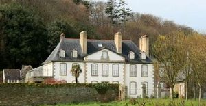
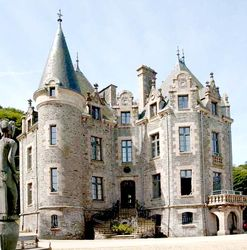
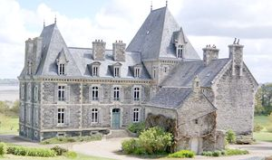
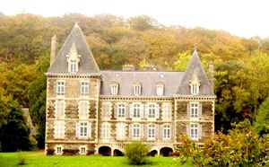
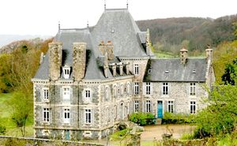
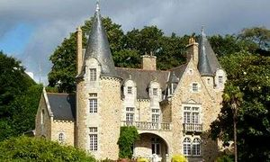

Recensement Jean-Claude Truffet
| Département | 29 — Finistère |
| Canton | Morlaix |
| Commune | Carantec |
| Type d'édifice | Château |
| Période d'origine | XVI-XVII-XIX |
| Coordonnées GPS | 48° 40' 07" Nord, 3° 54' 45" Ouest Frout GPS : 48° 40' 07" Nord, 3° 54' 45" Ouest Rohou GPS : 48° 39' 49,76" Nord, 3° 54' 18,37" Ouest |






cinq châteaux à Carantec; Fransic, Frout, Kéromnès, et Rohou. FRANSIC, cette ancienne terre noble appartenait au XVIIIe siècle aux familles Keranguen et Poulpiquet. Puis à partir du 12 avril 1781, le château du Fransic fut la propriété de Joseph Guillaume de Poulpiquet de Coatlez, époux de Marguerite de Kerouartz. En 1790, il appartenait au vicomte Léonard du Dresnay. Confisqué à la Révolution, le Fransic est vendu comme bien national il appartient à une famille anglaise avant d'être acquis par Sophie de Penguern. De 1802 à 1811, le maire de Carantec André Couhitte, réside au Fransic. En 1895 Fanny de Parscau achète la propriété à madame du Plessix-Quinquis. Ce château possède une chapelle privative, dédiée à Sainte Anne consacrée en 1789. FROUT, fut construit dans la seconde moitié du XIXe siècle. Il appartient au vicomte de Kersauzon au début du XXe siècle. Bâtiment de plan massé en L, composé de plusieurs pavillons emboités, l'entrée principale de la demeure se plaçant dans l'angle des deux corps principaux, au-dessus d'un escalier à deux volées arrondies. Tourelle circulaire sur l'angle. Maçonnerie de moellon avec encadrements de baies, corniche et lucarnes en pierre de taille. Parc avec sa chapelle édifiée en 1860, dédiée à notre Dame de Bonne Nouvelle.
KEROMNES, L'ancien château de Keromnès, restauré au XVIIIe siècle, est démoli vers 1897, il est alors remplacé par un nouvel édifice pour François de Kergrist, maire de Carantec de 1858 à 1896, introducteur de la culture maraîchère dans le Léon. Chapelle avec vitrail aux armes de François de Boiséon et François Bouteiller. Reconstruction, néo-XVIIe, éclectique, pigeonnier XVIe siècle. Edifice de plan en L composé d'un corps de bâtiment principal de trois travées et deux pavillons latéraux dans le même alignement, d'une courte aile en retour d'équerre sur la façade principale ainsi que d'une aile plus importante sur la façade arrière. La chapelle est placée en avant de la façade principale. Maçonnerie de moellon avec encadrements de baies, corniche et lucarnes en pierre de taille. ROHOU, l'édifice du XVIe siècle et du XIXe siècle. Il s'agit d'un ancien rendez-vous de chasse faisant jadis partie du domaine de Keromnes, appartenant à la famille Salaün de Keromnes. Une porte piétonne datant du XVIe siècle est encore visible : elle est surmontée d'un écusson représentant le blason de la famille Salaün de Keromnes. Le manoir actuel est construit en deux temps (d'abord la partie centrale, puis les ailes de chaque côté). Les ailes ont été édifiées par Julien de Kergrist au milieu du XIXe siècle. Propriété de Joseph Pierre de Kergrist, puis de Julien François de Kergrist (fils de Joseph Pierre et maire de Carantec de 1816 à 1830), de Joseph Pierre (1798-1868, fils de Julien François et époux de Pauline de Cargouët), de Joseph Jules de Kergrist (1847-1905, fils de Joseph-Pierre et époux de Marie Le Rouge de Guerdavid). Ces derniers n'ayant pas eu d'enfant, le Rohou est légué en 1920 à leur filleul, Joseph Le Rouge de Guerdavid (1886-1961, époux de Sophie de Bourmont). Sur la façade, on peut voir trois balcons à balustres en granit.
Fransic; Famille de Joseph Guillaume de Poulpiquet de Coatlez Kéromnès; Famille de François de Kergrist, Rohou; Famille Salaün de Keromnes
"
Quatre chateaux à Carantec; Fransic grav-1, Frout grav-2, Kéromnès grav-3-4-5 et Rohou grav-6. Fransic GPS : 48° 40' 07" Nord, 3° 54' 45" Ouest Frout GPS : 48° 40' 07" Nord, 3° 54' 45" Ouest Rohou GPS : 48° 39' 49,76" Nord, 3° 54' 18,37" Ouest